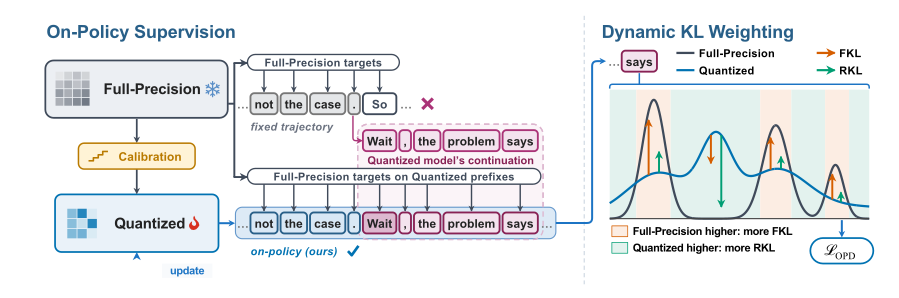

1Low-bit QAT fails on long-horizon reasoning
Existing QAT recipes supervise the quantized student with its full-precision counterpart on fixed response sequences. To see where this breaks, we take Qwen3-1.7B at 2 bits, group the 500 MATH-500 questions by how long the full-precision model's response is, and measure accuracy and how often each model runs into the 32,768-token limit.
As the full-precision response grows, the accuracy of the fixed-response QAT baselines collapses: on questions where the full-precision model needs at least 16K tokens, they solve at most 8% while it solves 47%. On those questions BitDistiller and EfficientQAT reach the token limit on most responses, while the full-precision model never does.
Fixed-response distillation supervises only reference prefixes, but quantization changes how the student generates. The longer the response, the more the student conditions on its own outputs, and the further its context drifts from the prefixes it was trained on. We call this trajectory divergence. Here is what it looks like inside the Figure 1 responses:
2On its own prefixes, the student errs in both directions
Trajectory divergence suggests supervising the student on the prefixes it actually generates. Doing so exposes a second challenge. We run the block-wise calibrated 2-bit student on its own rollouts and compare its next-token distribution $q$ with the full-precision teacher's $p$ at 16,384 prefixes from 128 of its responses. The student makes two-sided errors: at the same prefix it substantially underpredicts some candidates ($p_v \gg q_v$) and overpredicts others ($q_v \gg p_v$), and these errors become more frequent at high-entropy prefixes, where the model is deciding how to continue. We call this distributional misalignment.
Neither KL direction corrects both sides equally well. At high-entropy prefixes (student entropy of at least 0.5 nats) and under a small logit update, forward KL (FKL) moves 99.7% of severely underpredicted candidates ($p_v/q_v \ge 20$) toward the teacher but only 75.1% of severely overpredicted ones ($q_v/p_v \ge 20$); reverse KL (RKL) moves 86.3% of the overpredicted candidates but only 70.9% of the underpredicted ones. This calls for an objective that balances correction on both sides of the distribution.
3OnQ: calibrate, then learn from your own trajectories

OnQ has two stages.
Block-wise calibration. Starting from round-to-nearest quantization (uniform, asymmetric, group size 128), we train each transformer block in sequence to reproduce the full-precision block's output, following Block-AP in EfficientQAT. This turns a broken 2-bit model into a working starting policy.
On-policy distillation with Dynamic KL. The student samples responses through its quantized forward pass, and the frozen full-precision teacher supplies next-token distributions at every prefix the student visits, including prefixes that contain its own earlier mistakes. We update the latent weights and scales, and the student rolls out again. At each prefix, every vocabulary candidate mixes forward and reverse KL with its own weight: underpredicted candidates lean on FKL, overpredicted candidates lean on RKL.
In the same local-update analysis, Dynamic KL moves 95.1% of severely underpredicted candidates toward the teacher, close to FKL, and 84.7% of severely overpredicted ones, close to RKL (Figure 6, left). Each training step samples a batch of prompts, draws one response per prompt from the current student, and minimizes Dynamic KL averaged over all response tokens in the batch.
Right after calibration, the student repeats itself, mostly late in long responses: for Qwen3-1.7B at 2 bits, the share of repeated tokens rises from 6.7% in the first 4K response tokens to 21.1% beyond 8K, and by step 100 it is about 1% at every position. Since the loss weights all response tokens equally, long early rollouts would spend supervision on this repeated text, so we cap rollouts at 4,096 tokens for steps 1–50, 8,192 for steps 51–100, and 16,384 afterwards, for every model size and bit width.
4Best at every model size and bit width
We quantize Qwen3-1.7B, 4B, and 8B to 2 and 3 bits (weights only, BF16 activations) and compare OnQ with two PTQ methods (GPTQ, AutoRound) and three QAT methods (EfficientQAT, BitDistiller, ReasoningQAT). All models are evaluated in thinking mode on nine benchmarks spanning mathematics (GSM8K, MATH-500, AIME 24–26), code (HumanEval+, MBPP+, LiveCodeBench), knowledge and science (MMLU-Redux, GPQA-Diamond), and instruction following (IFEval), with a 32,768-token response cap (8,192 for some PTQ settings).
OnQ has the highest nine-benchmark average in all six model/bit settings and the highest score on 48 of the 54 benchmark–setting pairs. On Qwen3-8B at 2 bits it improves the average by 10.26 points over the strongest baseline, and its Qwen3-4B 2-bit model (64.95) already scores above every 2-bit baseline on Qwen3-8B (best: 60.42).
At every model size, OnQ's margin over the strongest baseline is larger at 2 bits than at 3 bits, and at 2 bits it exceeds 10 points on Qwen3-4B and 8B. At 2 bits the PTQ baselines perform poorly, while OnQ achieves the highest score on every benchmark at every model size. At 3 bits, OnQ comes within four points of the full-precision average on Qwen3-4B and 8B.
In five of the six settings, OnQ's largest margin over the strongest baseline falls on AIME or LiveCodeBench, and among the code benchmarks it falls on LiveCodeBench in every setting. HumanEval+ and MBPP+ ask for single functions from short specifications, whereas LiveCodeBench responses are about three times as long even at full precision. Over thousands of tokens, small errors compound into wrong or unfinished solutions; fixed-response QAT never trains on these long student trajectories, and OnQ supervises them directly.
5More accurate with fewer tokens, and far less repetition
OnQ's gains do not come from thinking longer. At 2 bits, across MATH-500, AIME, and LiveCodeBench, OnQ achieves the highest accuracy at all three model sizes, with shorter mean responses than the most accurate baseline in eight of the nine cases. On Qwen3-4B LiveCodeBench, accuracy rises from 28.34% for ReasoningQAT to 46.64% while the mean response shortens by more than a fifth. At 3 bits, OnQ again achieves the highest accuracy among QAT methods on all three benchmarks at every size, and it has the lowest average truncation rate among QAT methods in all six settings.
We also separate incorrect responses into repetitive errors, in which a response emits the same sentence, block, or computation again and again, and all other errors. The full-precision models produce no repetitive errors on MATH-500 and one on AIME. The fixed-response QAT baselines produce repetitive errors on 11.4–54.0% of the MATH-500 questions (Qwen3-1.7B W2) and on 6.7–11.1% of the AIME questions (Qwen3-4B W3). Trained on its own generations, OnQ produces repetitive errors on only 2.4% of the MATH-500 questions, a reduction that accounts for most of its accuracy gain over ReasoningQAT, and none on AIME.
6Which design choices drive the gains?
Contribution of each stage
Direct round-to-nearest (RTN) quantization severely degrades 2-bit accuracy, so a working policy has to be restored before the student can learn from its own rollouts. Block-wise calibration provides one, but still struggles on long-horizon reasoning at 2 bits, as its LiveCodeBench scores show. On-policy distillation then closes about half or more of the remaining gap to full precision in every setting, and lowers truncation in all six.
On-policy vs. fixed-response distillation
| Method | MATH-500 | HumanEval+ | MMLU-Redux |
|---|---|---|---|
| Fixed-response FKL | 59.00 | 39.63 | 52.28 |
| Fixed-response DKL | 61.00 | 42.07 | 52.68 |
| On-policy DKL (OnQ) | 69.40 | 48.78 | 55.75 |
Qwen3-1.7B W2. All three runs start from the same calibrated checkpoint and use the same number of response tokens; fixed-response training uses the QAT baselines' question–response pairs, and on-policy training uses our prompt pool. On-policy Dynamic KL exceeds fixed-response Dynamic KL on all three benchmarks, by up to 8.40 points; replacing FKL with Dynamic KL in fixed-response distillation adds up to 2.44.
Dynamic KL vs. other on-policy objectives
| Method | Objective | MATH-500 | HumanEval+ | MMLU-Redux |
|---|---|---|---|---|
| Cold start | – | 41.40 | 3.66 | 45.12 |
| Vanilla OPD | RKL | 63.00 | 10.98 | 48.18 |
| OPD + GRPO | RKL + RLVR | 66.00 | 4.27 | 48.84 |
| GKD | FKL | 66.20 | 11.59 | 48.82 |
| GRPO | RLVR | 31.40 | 0.61 | 34.05 |
| OnQ | Dynamic KL | 67.20 | 10.98 | 49.58 |
Qwen3-1.7B W2, 400 steps from a shared cold start on DeepScaleR mathematics problems. Dynamic KL achieves the highest three-benchmark average and the best MATH-500 and MMLU-Redux scores. Relying only on teacher supervision, it outperforms OPD + GRPO and GRPO on all three benchmarks.
7Contributions
- Two challenges. We identify trajectory divergence and distributional misalignment as two challenges that limit low-bit reasoning recovery.
- OnQ. We present OnQ, a low-bit recovery pipeline that combines on-policy distillation and candidate-wise Dynamic KL, starting from block-wise calibration.
- Results. OnQ achieves the highest nine-benchmark average in all six settings spanning Qwen3-1.7B, 4B, and 8B at 2 and 3 bits, improving the Qwen3-8B average at 2 bits by 10.26 points over the strongest baseline. It produces shorter responses with fewer repetitive errors, and it outperforms fixed-response distillation.
These results establish training on self-generated trajectories as an effective route to recovering reasoning under aggressive quantization.
Models
The OnQ checkpoints for all six settings are on Hugging Face (collection).
| Base model | 2-bit (W2) | 3-bit (W3) |
|---|---|---|
| Qwen3-1.7B | OnQ-Qwen3-1.7B-W2 | OnQ-Qwen3-1.7B-W3 |
| Qwen3-4B | OnQ-Qwen3-4B-W2 | OnQ-Qwen3-4B-W3 |
| Qwen3-8B | OnQ-Qwen3-8B-W2 | OnQ-Qwen3-8B-W3 |
BibTeX
@misc{zheng2026rightonq,
title={Right On Q: Recovering Reasoning under Quantization via Self-Generated Trajectories},
author={Boyuan Zheng and Jing Xiong and Chenwei Wu and Hui Shen and Zesen Zhao and Hei Ting Una Chan and Xueshen Liu and Zhen Zhang and Liyue Shen and Zechun Liu and Z. Morley Mao},
year={2026},
eprint={2610.29378},
archivePrefix={arXiv},
primaryClass={cs.CL},
url={https://arxiv.org/abs/2610.29378}
}